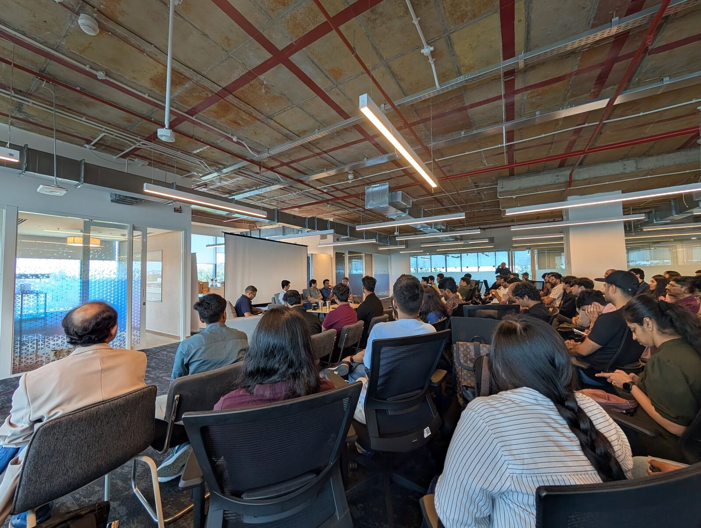
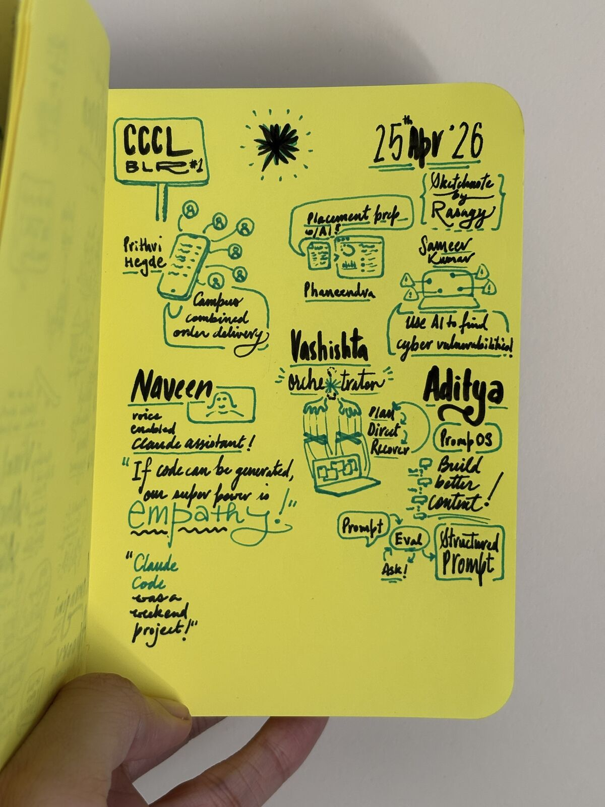
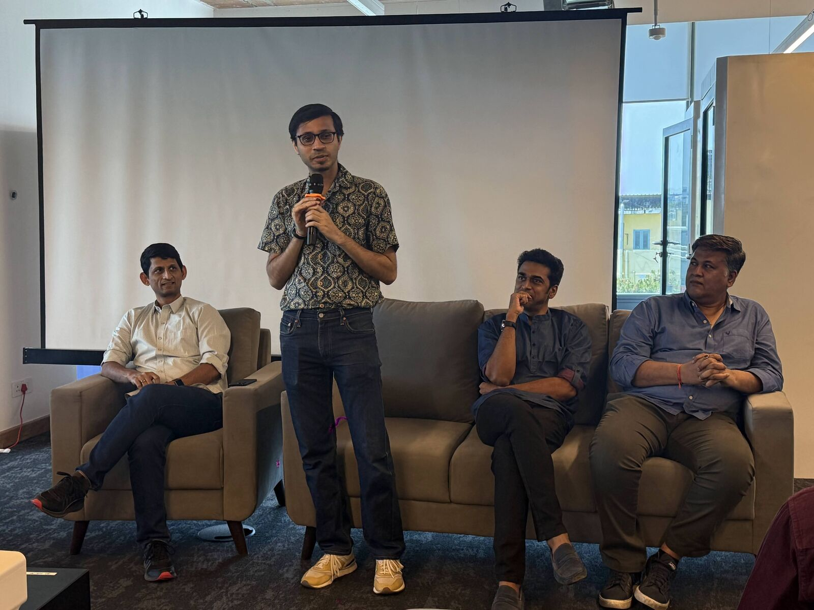
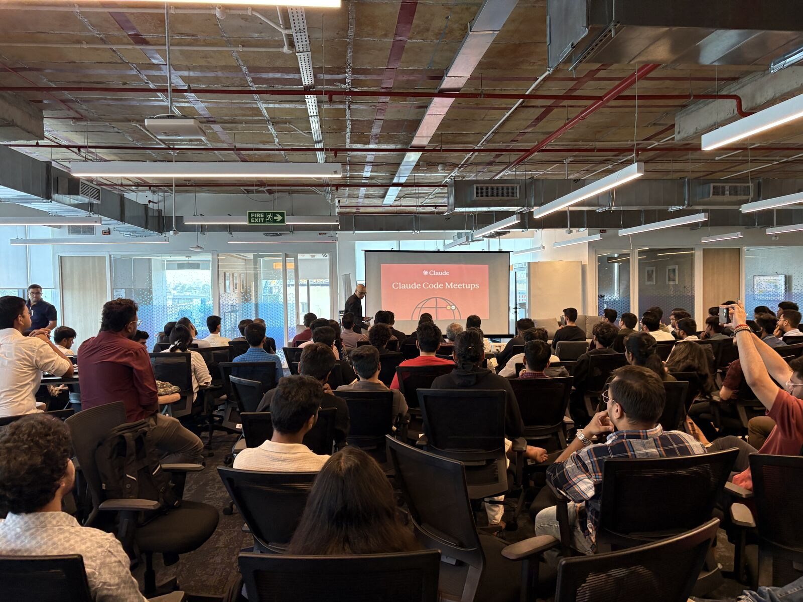

I was invited to join a panel discussion at India’s first Claude Code Community Meetup, that expanded from Claude Code Central London to Bengaluru (& a few more Indian cities). The panel was largely around how different roles & organizations are adopting Claude Code, and AI in general.

This year, I have been diving deep into Claude Code for my personal experiments, leading the AI & Product Leadership initiative at Capital One India & also introducing AI in my creative coding courses. So when I saw an open call for this meetup, I decided to apply to speak about my students’ experiments with Claude.
Vikram who organizes CCCL recommended I should join the panel instead. I felt quite honored to join some veteran leaders for the panel:
- Bala Ganesh, Principal at Flipkart & ex-founder of Report Bee
- Sathish KS, CEO at Zeotap with 22+ yrs of tech experience
- Shashwat Ghosh, GTM expert with decades of marketing experience
The audience for this edition was a mix of early career folks (in college/1-3 yrs experience) and veterans (20+ yrs). Three themes stood out for me from the event.
Theme #1: Excitement
There is genuine excitement amongst those who never thought they would be able to build things on their own.
College students are…
- making apps to combine delivery orders on campus
- doing better placement prep by reviewing resumes, doing mock interviews & getting feedback on their speaking skills
- finding cyber vulnerabilities
- orchestrating multiple agents
Every presentation was filled with the joy of actually building something that people are using, not just a project for getting grades.

Theme #2: Uncertainty
Beyond these excited demos, loomed uncertainty.
So many folks I spoke with were seeking advice on how to be relevant, which skills to focus on, how to not get lost in the crowd.
The AI hype across social media has a big impact on everyone: feeling left behind, anxiety for no clarity about their placements/promotions/layoffs, and feeling that everyone else has figured it out — except them.
Thankfully, the panel discussion was quite honest!
- I loved chatting with Bala Ganesh who reminded that most teams are still experimenting what actually works & scales.
- Sathish spoke about the reality of AI flattening hierarchies, and how managing people’s expectations from their role/level/growth is becoming crucial for leaders to talk about.
- I reminded folks that anyone who claims to know exactly how the future will be/the correct way to do something, is most likely trying to sell you something.
Theme #3: Judgment
I spoke about separating the function (design/engineering/PM) from its output.
Unlike the narrative on social media — Designers are COOKED! No one needs engineers! — the reality is still far from it. Just because AI can create the output of a function you don’t know about, doesn’t mean that function is no longer necessary.

I shared how defining what good looks like is becoming crucial across the process, and can get you one step closer to building agents that specialize in creating & evaluating specific parts of the process.
This will still need human judgement: for both defining the agents, and for ensuring that we aren’t just relying on the agent evals.
Perfection is attained not when there is nothing more to add, but when there is nothing more to remove.
– Antoine de Saint-Exupéry
In a world where it is easy to add & make more, having the judgment to say no or question if something is really needed is even more critical. 🙅
Traditionally, designers played this role of questioning what is right for the users (& tech pushed back on what is feasible). In a single-player ‘Builder’ world, will the rush to create more overpower the need for friction & critical questioning?
Reflections

I enjoyed dropping by for the meetup, and speaking with a crowd I generally don’t get to talk to. I hope we have many more such events that break away from the online hype, and go deeper into nuanced conversations.